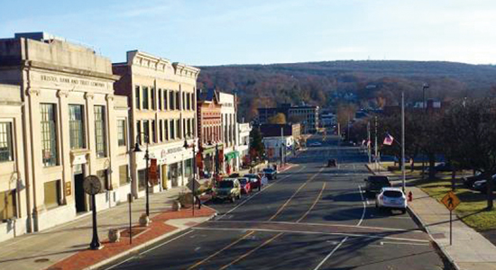

Spencer Roucoulet - About Me
Bio
My name is Spencer Roucoulet and I am from Bristol, Connecticut, about a 2 hour drive from NEIT.
Downtown Bristol
I live on campus, because commuting 2 hours for 4 days a week is absurd. At this point though, I wouldn't even want to move off of campus because of the friends I made here. When on campus almost all of my free time is spent with said friends in the room 2 of them share. I used to have a roommate, but he left NEIT pretty much without warning, and now I have a corner room all to myself. It's a pretty great deal. When I'm not with my friends, and even sometimes when I am, you can find me playing my Switch. As of writing, I'm playing a lot of PvZ: Battle for Neighborville and Avicii Invector. I also love reading and programming. A random fact about me is that I seem to have heightened sensitivity to tastes and textures. For example, soda almost always hurts to drink because of the carbonation.
I'm generally a calm, relaxed, and patient person. I can't even remember the last time I genuinely got angry at someone. I tend to overthink every chance I get, but at least that means everything I do is well-thought out.
Or so you'd think.
Schooling
- O'Connell School - Pre-K through 3
- West Bristol School - 4 through 8
- Goodwin Tech - 9 through 12
- NEIT - planned bachelor's
Goodwin Tech
Hobbies
- Video games
- my favorite is NieR: Automata!
- Reading
- Programming
- Pool

Nintendo Switch OLED